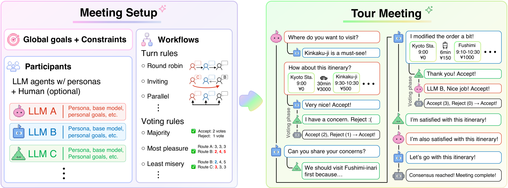

Overview
This page gives a technical overview of AI Tour Meeting and the key concepts used throughout the framework.

Framework overview
AI Tour Meeting orchestrates a group travel planning discussion among multiple LLM-based agents. As shown in the figure above, you first configure the meeting settings — the global goals, constraints, participants, and meeting workflow — and then start the meeting. Each participant is instantiated with a distinct persona and collaborates with the others to find an itinerary that satisfies their constraints and preferences through natural language discussion.
The meeting alternates between two phases. In the conversation phase, participants take turns searching for information, asking each other questions, and proposing itineraries. Once an itinerary is proposed, the meeting transitions to the voting phase, where the participants decide whether to accept or reject it. This two-phase process continues until all participants are satisfied with the currently accepted itinerary. See Meeting workflow for the details of this process.
Itinerary
An itinerary proposed during the meeting is a sequence of destinations, together with the transportation between them. Each destination includes a name, a description, a monetary cost, an arrival time, a duration of stay, and the transportation mode, cost, and duration from the previous destination. This structured representation allows the framework to validate an itinerary against the meeting constraints (e.g., budget and time window) and to compare itineraries in terms of objective metrics. See Itinerary for the details.
Monitoring and metrics
The framework collects various metrics to analyze both system-level performance and the dynamics of discussions:
- System-level metrics: the agents' token usage, the number of retries, and the number of time violations at destinations in the proposed itineraries.
- Discussion-dynamics metrics: the number of meeting steps and turns, the message history, the distribution of executed action types, the distribution of votes and scores, and the details of the proposed itineraries.
You can leverage these metrics to analyze discussions flexibly from multiple perspectives. Basic analyses, such as computing representative statistics and distributions for each metric, are available out of the box in the analytics dashboard, and all raw data can be exported as JSON for custom analysis (see Python API).
Interfaces
AI Tour Meeting provides three interfaces on top of the same engine, so you can pick the one that fits your use case: